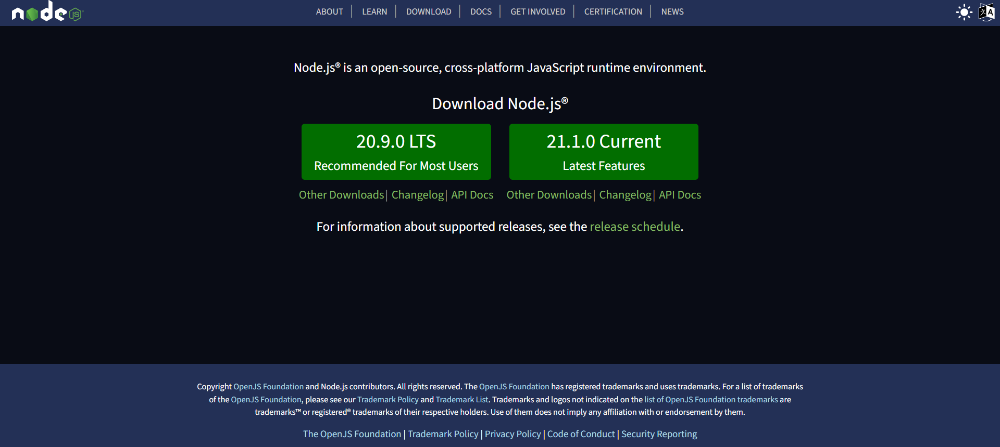

Integration & Extension
Until now, our website was a closed world: PHP pages talking to their own MySQL database. Real applications are integrated with other systems (a mobile app, a weather service, a map, an e-mail server, a payment platform...) and extended with libraries written by other developers. This chapter shows how: by exposing our data as a JSON API, by consuming the APIs of others, by installing PHP packages with Composer and by embedding external services in our pages.
I. Web APIs and REST
An API (Application Programming Interface) is a contract that lets one program use the
services of another. A Web API is an API reached over HTTP: instead of returning an HTML
page for a human, the server returns data (almost always JSON) for a program: our
JavaScript code, a mobile application, another server...
REST (REpresentational State Transfer) is the most common style for designing Web APIs.
Its main ideas are:
- Everything is a resource (a product, a user, an order) identified by a URL:
/api/productsis the collection of products,/api/products/3is the product number 3. - The HTTP verb (method) says what we want to do with the resource.
- The status code of the response says how it went.
- The server is stateless: every request contains everything needed to process it (no hidden "current page" stored on the server).
- Resources are exchanged in a standard format, usually JSON.
HTTP verbs and CRUD operations
| HTTP verb | CRUD operation | Example | Meaning |
|---|---|---|---|
| GET | Read | GET /api/products GET /api/products/3 |
List all products / get product 3. Never modifies data. |
| POST | Create | POST /api/products | Create a new product; the data is in the request body. |
| PUT | Update (replace) | PUT /api/products/3 | Replace product 3 with the data of the body. |
| PATCH | Update (partial) | PATCH /api/products/3 | Modify only some fields of product 3 (e.g. only the price). |
| DELETE | Delete | DELETE /api/products/3 | Delete product 3. |
HTTP status codes
The first digit gives the family: 2xx success, 3xx redirection, 4xx the client made a mistake, 5xx the server failed. The codes you will use the most:
| Code | Name | When to use it |
|---|---|---|
| 200 | OK | Successful GET or PUT. |
| 201 | Created | Successful POST: a new resource was created. |
| 204 | No Content | Success with an empty body (typically after DELETE). |
| 400 | Bad Request | The request is malformed (invalid JSON, missing id...). |
| 401 / 403 | Unauthorized / Forbidden | Not logged in / logged in but not allowed. |
| 404 | Not Found | The resource does not exist. |
| 405 | Method Not Allowed | The verb is not supported by this URL. |
| 422 | Unprocessable Content | Valid JSON but invalid data (empty name, negative price...). |
| 500 | Internal Server Error | Unexpected error on the server (database down, bug). |
JSON
JSON (JavaScript Object Notation) is a text format that looks like JavaScript literals.
It supports objects { }, arrays [ ], strings (always in double quotes),
numbers, true, false and null. No comments, no trailing commas,
no functions. A list of products returned by GET /api/products:
[
{ "id": 1, "name": "Keyboard", "price": 2500.00 },
{ "id": 2, "name": "Mouse", "price": 900.00 }
]
Each language converts between JSON text and its own data structures:
| JavaScript | PHP | |
|---|---|---|
| Data → JSON text | JSON.stringify(object) | json_encode($array) |
| JSON text → data | JSON.parse(text) or await response.json() | json_decode($text, true) (true = associative arrays) |
Read.php built the table rows). With an API, the server returns only data and the client
decides how to display it. The same API can then be used by your website, a mobile app and your
teammates' code.
II. Building a Small JSON REST API in PHP
We will build a CRUD API for the product table in a single file, api.php. To
stay simple (no URL rewriting), the id of the product is passed in the query string:
GET api.php→ list of productsGET api.php?id=3→ product 3POST api.phpwith a JSON body → create a productPUT api.php?id=3with a JSON body → update product 3DELETE api.php?id=3→ delete product 3
The table (database shop, created in phpMyAdmin):
CREATE TABLE product (
id INT AUTO_INCREMENT PRIMARY KEY,
name VARCHAR(100) NOT NULL,
price DECIMAL(10,2) NOT NULL
);
The building blocks
$_SERVER['REQUEST_METHOD']contains the HTTP verb:'GET','POST','PUT','DELETE'...header('Content-Type: application/json; charset=utf-8')tells the client that the body is JSON.http_response_code(201)sets the status code (the default is 200).json_encode($data)converts a PHP array into JSON text that weecho.$_POSTis only filled for HTML forms. A JSON body must be read "raw" from the streamphp://inputwithfile_get_contents('php://input'), then decoded withjson_decode(..., true).- PDO prepared statements (
prepare+execute) protect us against SQL injection: the values are never pasted into the SQL string.
api.php
<?php
declare(strict_types=1);
header('Content-Type: application/json; charset=utf-8');
// ---------- Helpers ----------
// Sends a JSON response with a status code and stops the script
function respond(int $status, mixed $data = null): never
{
http_response_code($status);
if ($data !== null) {
echo json_encode($data, JSON_UNESCAPED_UNICODE);
}
exit;
}
// Reads and decodes the JSON body of a POST/PUT request
function readJsonBody(): array
{
$data = json_decode(file_get_contents('php://input'), true);
if (!is_array($data)) {
respond(400, ['error' => 'The body must be a JSON object']);
}
return $data;
}
// Validates the fields of a product, answers 422 if they are invalid
function validateProduct(array $data): array
{
$name = is_string($data['name'] ?? null) ? trim($data['name']) : '';
$price = filter_var($data['price'] ?? null, FILTER_VALIDATE_FLOAT);
if ($name === '' || mb_strlen($name) > 100 || $price === false || $price < 0) {
respond(422, ['error' => 'A name (1-100 characters) and a positive price are required']);
}
return ['name' => $name, 'price' => $price];
}
function findProduct(PDO $pdo, int $id): array|false
{
$stmt = $pdo->prepare('SELECT id, name, price FROM product WHERE id = ?');
$stmt->execute([$id]);
return $stmt->fetch();
}
// ---------- Request handling ----------
$method = $_SERVER['REQUEST_METHOD'];
$id = null;
if (isset($_GET['id'])) {
$id = filter_var($_GET['id'], FILTER_VALIDATE_INT);
if ($id === false) {
respond(400, ['error' => 'id must be an integer']);
}
}
try {
$pdo = new PDO('mysql:host=localhost;dbname=shop;charset=utf8mb4', 'root', '', [
PDO::ATTR_ERRMODE => PDO::ERRMODE_EXCEPTION,
PDO::ATTR_DEFAULT_FETCH_MODE => PDO::FETCH_ASSOC,
]);
switch ($method) {
case 'GET':
if ($id === null) { // GET api.php
$products = $pdo->query('SELECT id, name, price FROM product ORDER BY id')->fetchAll();
respond(200, $products);
}
$product = findProduct($pdo, $id); // GET api.php?id=3
if ($product === false) {
respond(404, ['error' => 'Product not found']);
}
respond(200, $product);
case 'POST':
$product = validateProduct(readJsonBody());
$stmt = $pdo->prepare('INSERT INTO product (name, price) VALUES (?, ?)');
$stmt->execute([$product['name'], $product['price']]);
$newId = (int) $pdo->lastInsertId();
header("Location: api.php?id=$newId"); // where the new resource lives
respond(201, ['id' => $newId] + $product);
case 'PUT':
if ($id === null) {
respond(400, ['error' => 'Missing id']);
}
if (findProduct($pdo, $id) === false) {
respond(404, ['error' => 'Product not found']);
}
$product = validateProduct(readJsonBody());
$stmt = $pdo->prepare('UPDATE product SET name = ?, price = ? WHERE id = ?');
$stmt->execute([$product['name'], $product['price'], $id]);
respond(200, ['id' => $id] + $product);
case 'DELETE':
if ($id === null) {
respond(400, ['error' => 'Missing id']);
}
$stmt = $pdo->prepare('DELETE FROM product WHERE id = ?');
$stmt->execute([$id]);
if ($stmt->rowCount() === 0) {
respond(404, ['error' => 'Product not found']);
}
respond(204); // success, no body
default:
header('Allow: GET, POST, PUT, DELETE');
respond(405, ['error' => "Method $method not allowed"]);
}
} catch (PDOException $e) {
error_log($e->getMessage()); // details in the server log only
respond(500, ['error' => 'Server error']);
}
Every case ends with respond(), whose return type never (PHP 8.1+)
means "this function never returns" (it calls exit), so no break is needed.
Notice that the error message sent to the client in the catch is generic: never send SQL
errors or passwords to the browser.
Testing the API
GET requests can be tested directly in the browser: open
http://localhost/shop/api.php. For the other verbs, use a tool such as Postman, the Thunder
Client / REST Client extensions of VS Code, or curl (included in Windows 10/11):
curl -i http://localhost/shop/api.php?id=1
curl -i -X POST -H "Content-Type: application/json" -d "{\"name\":\"Webcam\",\"price\":4200}" http://localhost/shop/api.php
curl -i -X DELETE http://localhost/shop/api.php?id=3
-i option displays the status line and the
headers of the response: check that you really get 201 Created, 404 Not Found,
etc. Also note that MySQL returns DECIMAL columns as strings ("2500.00"), so
convert them with Number() in JavaScript before computing with them.
/api/products/3 are obtained with URL
rewriting (an .htaccess file with RewriteRule, or the router of a framework such
as Laravel or Slim). The logic of the API stays exactly the same. In a real project, the
POST, PUT and DELETE routes must also check that the user is logged
in and allowed to do the action (see the Web security chapter).
III. Consuming the API with fetch() and async/await
fetch() is the modern replacement of XMLHttpRequest. It returns a
Promise (a value that will be available later). With async /
await we can write asynchronous code that reads like normal sequential code:
await pauses the async function until the Promise is resolved, without
blocking the page.
GET: reading the list
async function loadProducts() {
const response = await fetch('api.php'); // 1. send the request, wait for the headers
if (!response.ok) { // 2. ok is true for status 200-299
throw new Error(`HTTP error ${response.status}`);
}
return await response.json(); // 3. read the body and parse the JSON
}
loadProducts()
.then((products) => console.log(products))
.catch((error) => console.error(error));
fetch() only rejects its Promise on a
network error. A 404 or a 500 is still a "successful" response
for fetch: always check response.ok (or response.status) yourself.
A small reusable helper for all the verbs
const API_URL = 'api.php';
// Sends a request to the API and returns the decoded JSON (or null for 204)
async function request(url, options = {}) {
const response = await fetch(url, {
headers: { 'Content-Type': 'application/json' },
...options,
});
if (!response.ok) {
// Our API returns { "error": "..." } when something goes wrong
const problem = await response.json().catch(() => ({}));
throw new Error(problem.error ?? `HTTP error ${response.status}`);
}
return response.status === 204 ? null : response.json();
}
const getProducts = () => request(API_URL);
const getProduct = (id) => request(`${API_URL}?id=${id}`);
const createProduct = (product) =>
request(API_URL, { method: 'POST', body: JSON.stringify(product) });
const updateProduct = (id, product) =>
request(`${API_URL}?id=${id}`, { method: 'PUT', body: JSON.stringify(product) });
const deleteProduct = (id) =>
request(`${API_URL}?id=${id}`, { method: 'DELETE' });
Using it in a page
<form id="product-form">
<input name="name" placeholder="Name" required>
<input name="price" type="number" step="0.01" min="0" placeholder="Price" required>
<button>Add</button>
</form>
<p id="message"></p>
<ul id="product-list"></ul>
const form = document.querySelector('#product-form');
const list = document.querySelector('#product-list');
const message = document.querySelector('#message');
// GET: display all products
async function showProducts() {
try {
const products = await getProducts();
list.replaceChildren(...products.map(createItem));
} catch (error) {
message.textContent = `Could not load the products: ${error.message}`;
}
}
function createItem(product) {
const li = document.createElement('li');
// textContent (not innerHTML): data coming from the server is never executed as HTML
li.textContent = `${product.name} - ${Number(product.price).toFixed(2)} DA `;
const editBtn = document.createElement('button');
editBtn.textContent = 'Edit price';
editBtn.addEventListener('click', async () => {
const price = prompt('New price', product.price);
if (price === null) return;
try {
await updateProduct(product.id, { name: product.name, price: Number(price) }); // PUT
await showProducts();
} catch (error) {
message.textContent = error.message;
}
});
const deleteBtn = document.createElement('button');
deleteBtn.textContent = 'Delete';
deleteBtn.addEventListener('click', async () => {
if (!confirm(`Delete ${product.name}?`)) return;
try {
await deleteProduct(product.id); // DELETE
li.remove();
} catch (error) {
message.textContent = error.message;
}
});
li.append(editBtn, deleteBtn);
return li;
}
// POST: create a product from the form
form.addEventListener('submit', async (event) => {
event.preventDefault(); // no page reload
const data = Object.fromEntries(new FormData(form)); // { name: '...', price: '...' }
try {
const created = await createProduct({ name: data.name, price: Number(data.price) });
message.textContent = `Product #${created.id} created`;
form.reset();
await showProducts();
} catch (error) {
message.textContent = error.message; // e.g. the 422 message of the API
}
});
showProducts();
<script src="products.js" defer></script> (or type="module") so that
it runs after the HTML is parsed. Use the Network tab of the developer tools (F12) to see each
request, its method, its status code and the JSON that was sent and received.
IV. Consuming Third-Party APIs
Thousands of services offer a Web API: weather, maps and geocoding, currency rates, translation,
payment, sending SMS or e-mails, AI models... As an example we use
Open-Meteo, a free weather API that does not require any key. The
current temperature in Algiers (latitude 36.75, longitude 3.06) is given by:
https://api.open-meteo.com/v1/forecast?latitude=36.75&longitude=3.06¤t=temperature_2m
Open it in your browser; the response looks like this (shortened):
{
"latitude": 36.75,
"longitude": 3.0625,
"timezone": "GMT",
"current_units": { "time": "iso8601", "interval": "seconds", "temperature_2m": "°C" },
"current": { "time": "2026-10-16T09:00", "interval": 900, "temperature_2m": 22.4 }
}
Always read the documentation of the API: it lists the URL, the parameters, the format of the response, the usage limits (number of requests per day) and the terms of use. There are two ways to call it.
1. From the browser, with fetch()
Click the button: this demo really calls Open-Meteo from your browser.
JavaScript
const button = document.getElementById('Weather_Btn');
const output = document.getElementById('Weather_Output');
const url = 'https://api.open-meteo.com/v1/forecast'
+ '?latitude=36.75&longitude=3.06'
+ '¤t=temperature_2m,wind_speed_10m'
+ '&timezone=Africa%2FAlgiers';
async function showAlgiersWeather() {
output.textContent = 'Loading...';
try {
const response = await fetch(url);
if (!response.ok) {
throw new Error(`HTTP error ${response.status}`);
}
const data = await response.json();
const { current, current_units: units } = data;
output.textContent =
`Algiers, ${current.time.replace('T', ' ')}: ` +
`${current.temperature_2m} ${units.temperature_2m}, ` +
`wind ${current.wind_speed_10m} ${units.wind_speed_10m}`;
} catch (error) {
output.textContent = `Could not load the weather: ${error.message}`;
}
}
button.addEventListener('click', showAlgiersWeather);
Result
Click the button.
2. From the server, with PHP
PHP can also send HTTP requests. The simplest way is file_get_contents() with a URL (it
requires allow_url_fopen=On and the openssl extension, both enabled in XAMPP).
http_build_query() builds the query string and encodes the values for us.
<?php
$url = 'https://api.open-meteo.com/v1/forecast?' . http_build_query([
'latitude' => 36.75,
'longitude' => 3.06,
'current' => 'temperature_2m',
]);
$context = stream_context_create(['http' => ['timeout' => 5]]); // do not wait forever
$json = file_get_contents($url, false, $context);
if ($json === false) {
echo 'The weather service is not available.';
} else {
$data = json_decode($json, true);
$temperature = $data['current']['temperature_2m'];
echo 'Temperature in Algiers: ' . htmlspecialchars((string) $temperature) . ' °C';
}
For more control (POST requests, custom headers, reading the status code) use the cURL extension:
<?php
$ch = curl_init($url);
curl_setopt_array($ch, [
CURLOPT_RETURNTRANSFER => true, // return the body instead of printing it
CURLOPT_TIMEOUT => 5,
CURLOPT_HTTPHEADER => ['Accept: application/json'],
]);
$json = curl_exec($ch);
$status = curl_getinfo($ch, CURLINFO_HTTP_CODE);
if ($json === false || $status !== 200) {
error_log('Weather API error: ' . curl_error($ch) . " (HTTP $status)");
$data = null;
} else {
$data = json_decode($json, true);
}
cacert.pem from
curl.se/docs/caextract.html and set
curl.cainfo and openssl.cafile to its path in php.ini, then restart
Apache. Never "fix" it by disabling CURLOPT_SSL_VERIFYPEER.
Which one to choose? API keys must stay on the server
Most APIs (maps, e-mail, payment, AI...) require an API key, a secret string that identifies your account and is billed or rate-limited. Everything sent to the browser (HTML, JS, the requests visible in the Network tab) can be read by any visitor. Therefore:
- Keyless public API (like Open-Meteo): calling it directly from JavaScript is fine.
- API with a secret key: the key stays in PHP (in a
.envfile, see section V). Your JavaScript calls your own PHP script, which calls the API and returns the result. This PHP script is called a proxy; it can also cache the answers to save your quota.
<?php
// weather.php : the browser calls fetch('weather.php?city=Oran'), never the external API
require __DIR__ . '/vendor/autoload.php';
Dotenv\Dotenv::createImmutable(__DIR__)->load(); // reads the secret key from .env
header('Content-Type: application/json; charset=utf-8');
$city = trim($_GET['city'] ?? '');
if ($city === '') {
http_response_code(400);
echo json_encode(['error' => 'city is required']);
exit;
}
// "api.example.com" stands for any API that needs a key
$url = 'https://api.example.com/v1/weather?' . http_build_query([
'q' => $city,
'key' => $_ENV['WEATHER_API_KEY'], // never visible to the visitor
]);
$json = file_get_contents($url, false, stream_context_create(['http' => ['timeout' => 5]]));
if ($json === false) {
http_response_code(502); // 502 Bad Gateway: the upstream service failed
echo json_encode(['error' => 'Weather service unavailable']);
exit;
}
echo $json;
CORS: why some fetch() calls are blocked
An origin is the triple protocol + domain + port:
http://localhost, http://localhost:5500 and
https://localhost are three different origins. For security, browsers apply the
same-origin policy: JavaScript of a page may send a request to another origin, but it
is not allowed to read the response, unless the other server explicitly allows it.
This permission mechanism is CORS (Cross-Origin Resource Sharing).
The server grants the permission with the response header Access-Control-Allow-Origin.
Open-Meteo answers with Access-Control-Allow-Origin: * (any origin), that is why our demo
works. An API without this header produces the famous console error "... has been blocked by CORS
policy: No 'Access-Control-Allow-Origin' header is present on the requested resource".
For "non-simple" requests (PUT, DELETE, or a JSON Content-Type), the browser first sends an
automatic OPTIONS request called a preflight to ask the server what is
allowed. If your api.php must be used from another origin (for example a front-end served by
VS Code Live Server on http://127.0.0.1:5500), add at the top of the file:
<?php
// Allow ONE known origin (avoid "*" if your API uses cookies / sessions)
header('Access-Control-Allow-Origin: http://127.0.0.1:5500');
header('Access-Control-Allow-Methods: GET, POST, PUT, DELETE, OPTIONS');
header('Access-Control-Allow-Headers: Content-Type');
// Answer the preflight request and stop
if ($_SERVER['REQUEST_METHOD'] === 'OPTIONS') {
http_response_code(204);
exit;
}
curl or Postman ignore it, which is another reason to call a blocked API from your server (the
proxy above). And if your pages and api.php are both served by XAMPP from
http://localhost, they share the same origin and you do not need any CORS header.
V. Extending PHP with Composer Packages
Do not reinvent the wheel: sending e-mails, generating PDFs, reading Excel files, resizing images or handling configuration are solved problems. Composer (installation explained in the Unit Testing chapter) downloads these libraries from Packagist, the public repository of PHP packages, together with their own dependencies.
| Command | Effect |
|---|---|
| composer require vendor/package | Adds the package to composer.json, installs it in vendor/ and records the
exact version in composer.lock. |
| composer require --dev vendor/package | Same, for a development-only tool (PHPUnit...). |
| composer install | Installs exactly the versions of composer.lock (run it after cloning the project). |
| composer update | Updates the packages to the newest versions allowed by composer.json. |
| composer remove vendor/package | Uninstalls a package. |
Whatever the package, you use it by including one file at the top of your script:
require __DIR__ . '/vendor/autoload.php';. Composer's autoloader then loads each class
automatically the first time you use it.
Example 1: configuration and secrets with vlucas/phpdotenv
Database passwords and API keys must not be written in your PHP code (they would end up on GitHub).
Put them in a .env file and load it with phpdotenv:
composer require vlucas/phpdotenv
# .env (never committed: add ".env" to .gitignore) DB_HOST=localhost DB_NAME=shop DB_USER=root DB_PASS= WEATHER_API_KEY=put-your-secret-key-here
<?php
// config.php : included by every script that needs the database
require __DIR__ . '/vendor/autoload.php';
$dotenv = Dotenv\Dotenv::createImmutable(__DIR__);
$dotenv->load(); // fills $_ENV with the values of .env
$dotenv->required(['DB_HOST', 'DB_NAME', 'DB_USER']); // clear error if a variable is missing
$pdo = new PDO(
"mysql:host={$_ENV['DB_HOST']};dbname={$_ENV['DB_NAME']};charset=utf8mb4",
$_ENV['DB_USER'],
$_ENV['DB_PASS'] ?? '',
[PDO::ATTR_ERRMODE => PDO::ERRMODE_EXCEPTION]
);
.env.example file with the same keys but
without the real values, so your teammates know what to fill in. The .env file must not be
downloadable: keep it outside the public folder, or block it in an .htaccess file with
<Files ".env"> Require all denied </Files>.
Example 2: sending e-mails with phpmailer/phpmailer
PHP's mail() function does not work on XAMPP without configuration and is often treated as
spam. PHPMailer sends e-mails through a real SMTP server (Gmail, Outlook, your university...).
composer require phpmailer/phpmailer
<?php
require __DIR__ . '/vendor/autoload.php';
Dotenv\Dotenv::createImmutable(__DIR__)->load();
use PHPMailer\PHPMailer\PHPMailer;
use PHPMailer\PHPMailer\Exception;
function sendWelcomeEmail(string $to, string $name): bool
{
$mail = new PHPMailer(true); // true = throw exceptions on errors
try {
$mail->isSMTP();
$mail->Host = $_ENV['SMTP_HOST']; // e.g. smtp.gmail.com
$mail->SMTPAuth = true;
$mail->Username = $_ENV['SMTP_USER'];
$mail->Password = $_ENV['SMTP_PASS'];
$mail->SMTPSecure = PHPMailer::ENCRYPTION_STARTTLS;
$mail->Port = 587;
$mail->CharSet = 'UTF-8';
$mail->setFrom($_ENV['SMTP_USER'], 'Our Team Website');
$mail->addAddress($to, $name);
$mail->isHTML(true);
$mail->Subject = 'Welcome!';
$mail->Body = '<p>Hello ' . htmlspecialchars($name) . ', thank you for registering.</p>';
$mail->AltBody = "Hello $name, thank you for registering.";
$mail->send();
return true;
} catch (Exception $e) {
error_log('Mailer error: ' . $mail->ErrorInfo);
return false;
}
}
SMTP_PASS. Use a dedicated account for the project, never your personal one. Before adding a
package, check on Packagist that it is maintained (recent releases, many installs) and read its README.
VI. Embedding External Services
Some services are integrated without writing any API code: they give you an HTML snippet, usually an
<iframe>, that displays a page of their site inside yours (a map, a video, a calendar,
a form). Useful attributes:
title: describes the content for screen readers (required for accessibility).loading="lazy": the iframe is loaded only when the user scrolls near it, so your page loads faster.referrerpolicy: controls how much of your page URL is sent to the external site in theRefererheader (e.g.no-referrer,strict-origin-when-cross-origin).allow/allowfullscreen: features the embedded page may use (full screen, autoplay, clipboard...).sandbox: restricts what the embedded page can do (scripts, forms, pop-ups); useful for content you do not fully trust.
A map with OpenStreetMap
On openstreetmap.org, move to the place you want, click
Share and copy the HTML code. The bbox parameter is the visible area
(min longitude, min latitude, max longitude, max latitude) and marker places a pin:
HTML
<iframe
title="Map of Algiers"
width="100%" height="350"
src="https://www.openstreetmap.org/export/embed.html?bbox=2.98,36.70,3.14,36.80&layer=mapnik&marker=36.75,3.06"
loading="lazy"
referrerpolicy="no-referrer">
</iframe>
<a href="https://www.openstreetmap.org/?mlat=36.75&mlon=3.06#map=13/36.75/3.06">
View a larger map
</a>
Result
Videos
On YouTube, click Share → Embed. Replacing youtube.com by
youtube-nocookie.com enables the privacy-enhanced mode (no tracking cookies until the
visitor plays the video). VIDEO_ID is the code found after v= in the URL of the
video:
<iframe
width="560" height="315"
src="https://www.youtube-nocookie.com/embed/VIDEO_ID"
title="Presentation of our project"
loading="lazy"
referrerpolicy="strict-origin-when-cross-origin"
allow="accelerometer; clipboard-write; encrypted-media; gyroscope; picture-in-picture"
allowfullscreen>
</iframe>
<!-- For your own video file, no external service is needed -->
<video src="SRC/VIDEOS/demo.mp4" controls width="560" preload="metadata"></video>
X-Frame-Options: DENY or the CSP directive frame-ancestors: the iframe then
stays empty and the console shows "refused to connect". This protects them against
clickjacking; you will see in the Web security chapter how to protect your own site the same way.
Every embedded service also loads content from a third party: mention it in the privacy policy of your
site.
VII. Beyond the Course
JavaScript on the server: Node.js
Node.js is a runtime that executes JavaScript outside the browser, built on Chrome's V8
engine. With it you can write the back-end in the same language as the front-end: a Node.js program can
play exactly the role of our api.php. Its package manager, npm, plays the
role of Composer (package.json ↔ composer.json,
node_modules/ ↔ vendor/).

The same "list of products" endpoint, written with Node's built-in http module (save it as
server.mjs, run node server.mjs and open
http://localhost:3000/api/products):
import { createServer } from 'node:http';
const products = [
{ id: 1, name: 'Keyboard', price: 2500 },
{ id: 2, name: 'Mouse', price: 900 },
];
const server = createServer((req, res) => {
if (req.method === 'GET' && req.url === '/api/products') {
res.writeHead(200, { 'Content-Type': 'application/json' });
res.end(JSON.stringify(products));
} else {
res.writeHead(404, { 'Content-Type': 'application/json' });
res.end(JSON.stringify({ error: 'Not found' }));
}
});
server.listen(3000, () => console.log('Server running on http://localhost:3000'));
In practice, Node.js developers use a framework such as Express
(npm install express) for routing, and a database driver for MySQL or PostgreSQL. Unlike PHP
on Apache, a Node.js program is a long-running server process: it is started once and handles all the
requests asynchronously.
Front-end frameworks
When an interface becomes large, manipulating the DOM by hand (createElement,
textContent, event listeners...) becomes hard to maintain. Front-end frameworks such as
React, Vue, Angular or Svelte let you
describe the interface as reusable components that are re-rendered automatically when the data
(the state) changes. They fit perfectly with what we built in this chapter: the framework
renders the page in the browser and calls a JSON REST API (written in PHP, Node.js or anything else) with
fetch(). An introduction is available in the React JS page.
On the PHP side, frameworks such as Laravel and Symfony provide
routing, an MVC structure, database tools, authentication and security protections out of the box; they
are all installed with Composer.
Practice
- Create the
producttable andapi.php. Test the five operations withcurlor Postman and check every status code (200, 201, 204, 400, 404, 405, 422). - Write
products.htmlthat lists, adds, edits and deletes products using onlyfetch()and the API (no page reload). - Add a search:
GET api.php?q=keyreturns only the products whose name containskey(useLIKE ?with a prepared statement and the value"%$q%"). - Display the current temperature of the cities presented in your team project (e.g. Algiers, Oran, Constantine, Tlemcen, Ghardaia, Tipaza) using Open-Meteo. Do it once from JavaScript, once from PHP with cURL.
- Move your database credentials into a
.envfile loaded withvlucas/phpdotenv, add.envto.gitignoreand commit a.env.example. - Send a confirmation e-mail with PHPMailer when a user submits the contact form of your site.
- Add an OpenStreetMap iframe showing the location of ENSIA on the "Contact" page, with
loading="lazy"and atitle. - Write PHPUnit tests for
validateProduct()(move it into a class ofsrc/first).